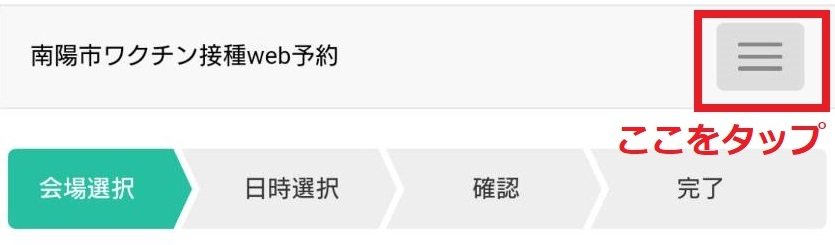
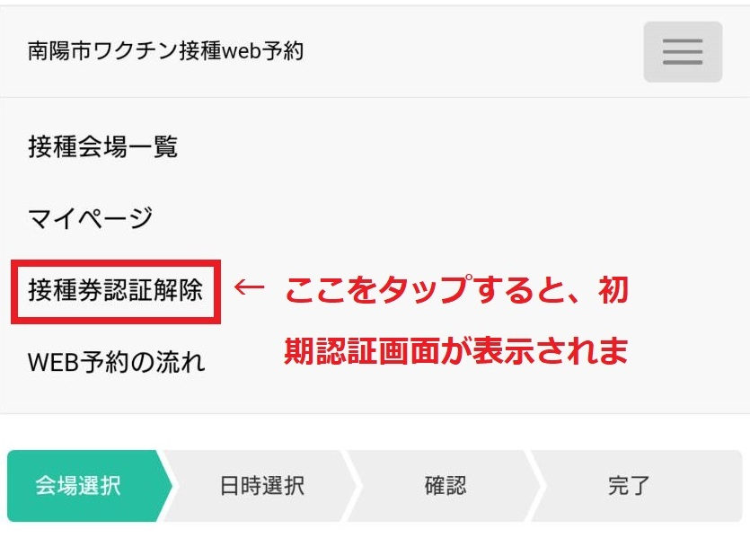

- ワクチン接種の予約方法を教えてください。
- 【集団接種の場合】
以下、３つの方法で予約を行うことができます。
①LINE予約／②WEB予約／③コールセンター電話予約
【個別接種の場合】
原則、電話での予約は受け付けしてません。定期受診の際に、直接かかりつけ医療機関に相談してください。
- ワクチン接種の予約を変更したいです。
- 【集団接種の場合】
①LINE予約／②WEB予約／③コールセンター電話予約
①～③いずれの場合も、一旦、予約済みの日程をキャンセルした後で、再度予約を行ってください。
【個別接種の場合】
予約した医療機関へ直接お問い合わせください。
- 家族で同じ時間にワクチン接種の予約したいのですが。
- 接種会場の空き状況次第では可能ですが、一人ずつ（家族全員分）予約が必要となりますので、予約の際はご注意ください。
【２人目以降の予約をするには】

次に

- 事前予約なしで接種を受けることができる医療機関・接種会場はありますか。
- どの会場で接種を受ける場合も、事前に予約が必要となります。
- 一度に複数人のワクチン接種の予約したいのですが。
- システムの都合上、1人ずつの予約が必要となります。
- ２回目の接種はどのタイミングで予約するのでしょうか。1回目接種の予約時に２回目接種の予約もできますか。
- 1回目の予約と2回目の予約を同時に行うことはできません。1回目のワクチン接種時に当日の会場内で、2回目の予約可能日をご案内しますので、その後に予約していただく流れになります。
※掲載内容は5月1日時点のものです。